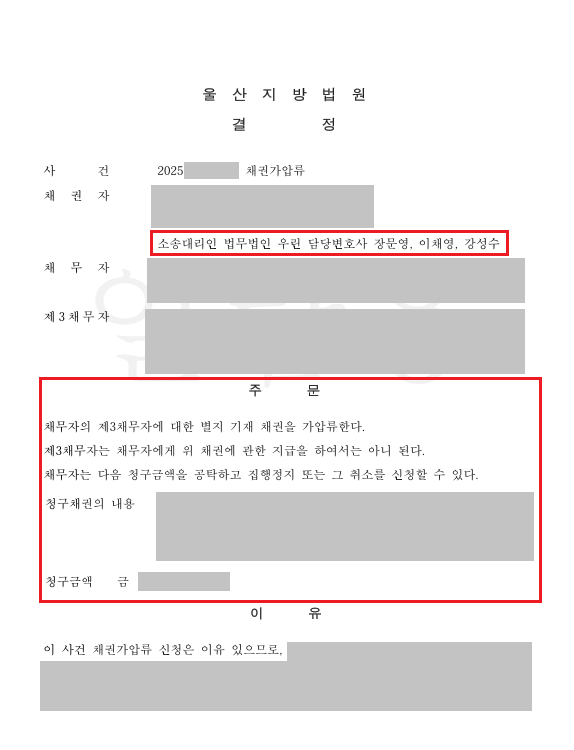

핵심 결과
상대방이 돈을 돌려주지 않고 연락까지 피하던 사건이었습니다.
겉으로 보기에는 상대방 명의 부동산이 없어 강제집행이 어려워 보였습니다.
하지만 법무법인 우린은 상대방이 거주 중인 주택의 임대차보증금 반환채권을 찾아냈고, 법원에 채권가압류를 신청했습니다.
결과적으로 법원은 가압류를 인용했고, 의뢰인은 돈을 회수할 수 있는 중요한 기반을 확보했습니다.
| 구분 | 내용 |
|---|---|
| 사건 분야 | 채권가압류, 임대차보증금 반환채권 |
| 문제 상황 | 상대방이 돈을 주지 않고 연락을 회피 |
| 겉으로 보인 문제 | 상대방 명의 부동산이 없음 |
| 핵심 재산 | 거주 주택의 임대차보증금 |
| 주요 대응 | 임대차보증금 반환채권 가압류 신청 |
| 최종 결과 | 채권가압류 결정 인용 |
사건 개요
의뢰인은 상대방과 계약을 맺고 큰돈을 지급했습니다.
하지만 상대방은 약속한 의무를 이행하지 않았습니다.
돈을 돌려달라는 정당한 요구에도 제대로 답하지 않았고, 결국 연락까지 피하기 시작했습니다.
가장 큰 문제는 상대방 명의의 부동산이 보이지 않았다는 점입니다.
집이나 토지가 없다면 돈을 받을 방법이 없다고 생각하기 쉽습니다.
하지만 실제로는 그렇지 않습니다.
부동산이 없어도, 상대방이 돌려받을 보증금·예금·급여·거래처 대금 같은 채권을 묶을 수 있습니다.
이번 사건의 핵심은 상대방이 거주 중인 집의 임대차보증금이었습니다.
막막했던 이유
- 상대방이 약속을 지키지 않았습니다.
- 돈을 돌려달라는 요구에도 연락을 피했습니다.
- 상대방 명의 부동산이 없었습니다.
- 시간이 지나면 보증금이 빠져나갈 수 있었습니다.
- 가압류 타이밍을 놓치면 회수가 더 어려워질 수 있었습니다.
채권가압류가 중요한 이유
가압류는 상대방 재산을 미리 묶어두는 절차입니다.
나중에 재판에서 이겨도 상대방이 돈을 빼돌린 뒤라면 실제 회수가 어려울 수 있습니다.
그래서 돈을 받아야 하는 사건에서는 본안 소송보다 먼저 가압류가 필요한 경우가 많습니다.
| 가압류 대상 | 설명 |
|---|---|
| 부동산 | 상대방 명의 집, 토지 |
| 예금채권 | 은행 계좌에 있는 돈 |
| 급여채권 | 회사에서 매달 받는 월급 |
| 매출채권 | 거래처에서 받을 돈 |
| 임대차보증금 | 집주인에게 나중에 돌려받을 보증금 |
이번 사건은 상대방 명의 부동산이 없었습니다.
그래서 부동산 압류가 아니라, 상대방이 집주인에게 돌려받을 임대차보증금 반환채권을 정확히 특정하는 방향으로 진행했습니다.
해결 전략
1. 숨은 돈줄을 임대차보증금에서 찾았습니다
상대방 명의 집이 없다고 해서 재산이 전혀 없는 것은 아닙니다.
전세나 월세로 살고 있다면, 나중에 집주인에게 돌려받을 보증금이 있을 수 있습니다.
이 보증금은 상대방이 가진 재산이고, 채권가압류 대상이 될 수 있습니다.
2. 법원에 가압류 필요성을 설득했습니다
가압류는 단순히 “돈을 못 받고 있습니다”라고 적는다고 바로 받아들여지는 절차가 아닙니다.
돈을 받을 권리가 있다는 점과, 지금 재산을 묶어두지 않으면 회수가 어려워질 수 있다는 점을 함께 설명해야 합니다.
계약 관계, 지급 내역, 상대방의 미이행 정황, 연락 회피 사정 등을 정리해 제출했습니다.
3. 제3채무자와 채권 내용을 정확히 특정했습니다
임대차보증금 가압류는 상대방만 적는다고 끝나지 않습니다.
집주인, 즉 제3채무자가 누구인지 정확해야 합니다.
또 어떤 채권을 묶는지 명확해야 합니다.
이 부분이 틀리면 송달이 지연되거나, 신청이 기각될 수 있습니다.
| 대응 항목 | 준비한 내용 |
|---|---|
| 채권 근거 | 계약 내용, 지급 내역, 반환 요구 정리 |
| 가압류 필요성 | 상대방 연락 회피와 재산 은닉 위험 설명 |
| 가압류 대상 | 임대차보증금 반환채권 특정 |
| 제3채무자 | 집주인 정보와 송달 구조 확인 |
| 절차 목표 | 돈이 빠져나가기 전 보증금 묶기 |
결과
법원은 제출된 자료와 가압류 필요성을 검토했습니다.
그 결과 상대방의 임대차보증금 반환채권에 대한 가압류 결정을 인용했습니다.
이제 상대방은 마음대로 보증금을 받아 빼돌리기 어려워졌습니다.
의뢰인은 본안 소송과 이후 강제집행을 준비할 수 있는 현실적인 기반을 확보했습니다.
최종 결과
상대방 명의 부동산이 없어 막막했던 사건에서 임대차보증금 반환채권 가압류 결정을 받아냈습니다.
돈을 회수하기 위한 핵심 재산을 먼저 묶어둔 것입니다.
혼자 신청할 때 특히 조심할 점
채권가압류는 양식만 채운다고 되는 절차가 아닙니다.
작은 실수 하나로 시간이 지연될 수 있습니다.
그 사이 상대방이 보증금을 빼가면 회수 가능성이 크게 낮아집니다.
| 실수 유형 | 위험 |
|---|---|
| 권리 설명 부족 | 법원이 가압류 필요성을 인정하지 않을 수 있음 |
| 주소 오류 | 송달 지연 또는 절차 지연 |
| 채권 특정 오류 | 어떤 돈을 묶는지 불명확해질 수 있음 |
| 제3채무자 오류 | 집주인에게 제대로 송달되지 않을 수 있음 |
| 타이밍 지연 | 상대방이 먼저 돈을 빼갈 수 있음 |
가압류는 돈을 받기 위한 준비 단계가 아니라, 실제 회수 가능성을 좌우하는 첫 결정타입니다.
결론
상대방 명의 부동산이 없다고 해서 돈 받을 길이 막힌 것은 아닙니다.
예금, 급여, 매출채권, 임대차보증금처럼 묶을 수 있는 재산은 따로 있을 수 있습니다.
중요한 것은 어떤 재산을, 얼마나 빨리, 얼마나 정확하게 특정하느냐입니다.
사무장·상담실장 없이 변호사가 직접 상담합니다
법무법인 우린은 강성수 변호사가 직접 상담하고, 기록 검토부터 가압류 신청, 본안 소송, 강제집행까지 직접 진행합니다.
돈을 돌려받아야 하는 사건은 속도가 중요합니다.
상대방이 연락을 피하거나 재산을 숨기는 정황이 있다면, 먼저 묶을 수 있는 재산부터 확인해야 합니다.
이 글은 일반적인 법률 정보 제공을 위한 자료이며, 개별 사건의 결과를 보장하지 않습니다. 구체적인 대응은 사실관계와 증거에 따라 달라질 수 있습니다.